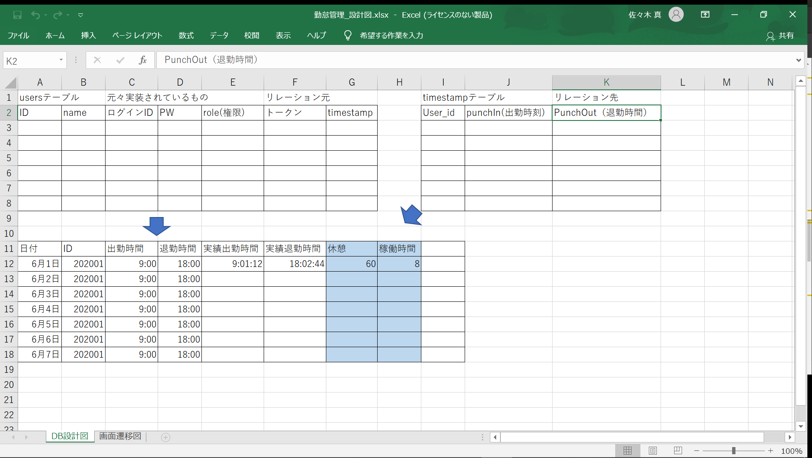
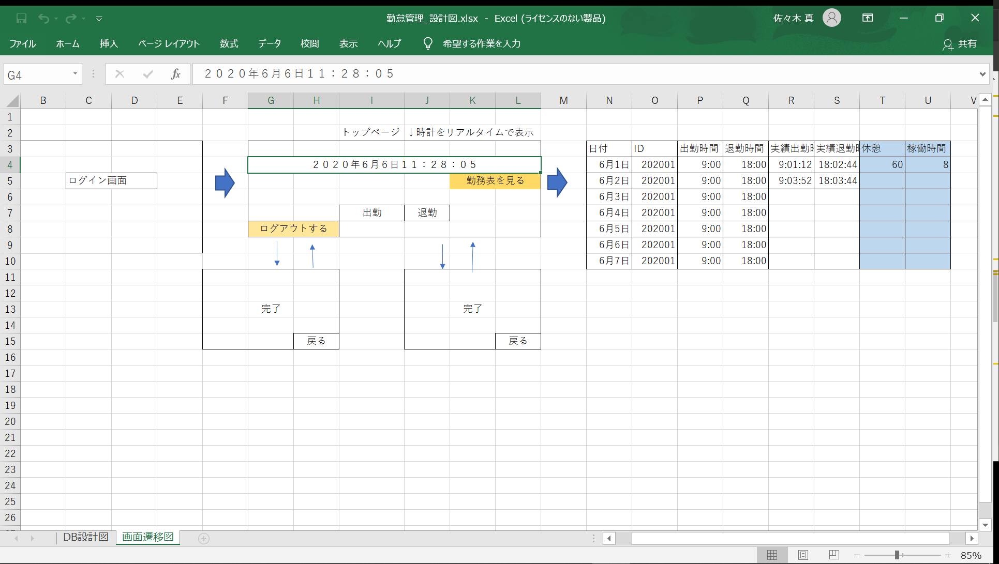
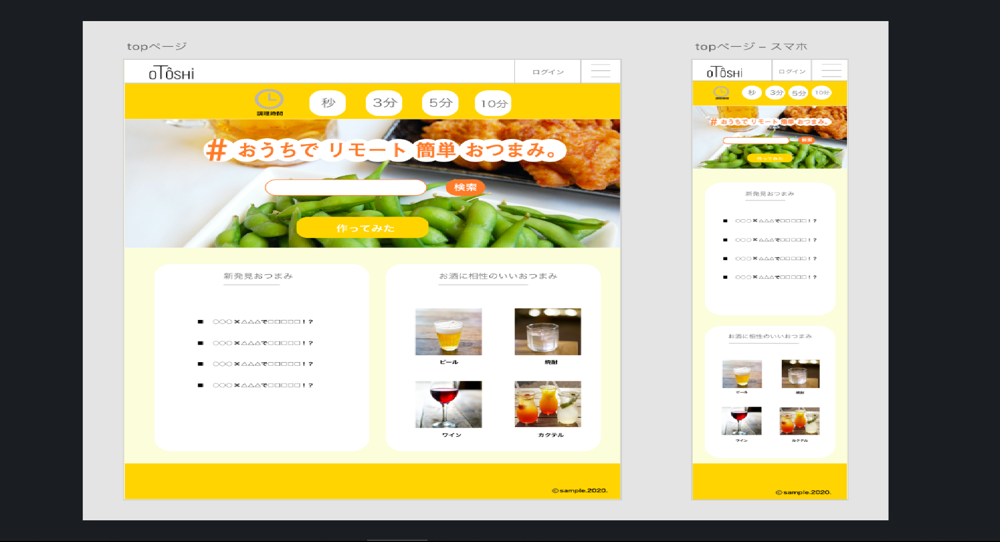

佐々木真 (ささきまこと)
1994年7月2日生まれ（26歳）
経歴
2017年 3月：阪南大学 経済学部 経済学科 卒業
2017年11月：株式会社アイエスエフネット 入社 (2020年7月現在)
大学卒業後、公務員を目指すもご縁がなく未知識未経験の状態でインフラエンジニアに就職しました。
直近の業務ではネットワーク・サーバの運用、保守、監視に携わっていました。
資格
2018年10月 シスコ技術者認定 CCNA
2018年12月 ITIL資格認定試験 Foundation Certification
2019年12月 CompTIA認定資格 Network+
2019年12月 CompTIA認定資格 A+
プログラミング学習スキル
2019年12月～2020年1月 HTML・CSS
2020年 1月～2020年2月 PHP/docker
2020年 2月～2020年7月 laravel
PHPで作成したアプリ
ソースコード
GitHub(メモアプリ）
開発環境・スキルセット
Linux,apache,Mysql,PHP
HTML
css
PHP
SQL(mysql)
こだわりポイント
laravelのルーティングを用いたフルスクラッチでの作成
mysqlを用いたデータの新規登録・更新・削除処理
簡易的なログイン機能を追加
バリデーション処理を記載
悩んだ所
HTTP通信の仕組みについて
仮想マシンを用いて開発をしたのでデータのマウントに時間がかかった
mysqlのデータをブラウザに表示させる
ログインでのセッションの保持について
laravelで作成したアプリ
ソースコード
GitHub(勤怠管理アプリ）
開発環境・スキルセット
xamp
HTML
css
PHP
SQL(mysql)
laravel
こだわりポイント
DBのテーブル・画面遷移図の考案


悩んだ所
テーブルのリレーション処理の書き方
テーブルの同じレコードに出勤と退勤の登録をする
合計の勤務時間をDB同士で計算して休憩時間（定数）を引く処理
現在の取り組み
勉強会で知り合った方々（未経験者・現役エンジニア）との共同開発
制作物の完成図

webサービスの制作をフロント側（vue.js）とサーバー側（laravel）に分かれて作業
をしており私はサーバー側で開発をしています。
これまで１人で開発をしてきたので、コードレビューしてもらい相手に見やすい書き方を
心がけています。共同開発の経験を通して質問する時も相手に時間を使わせないよう質問力を考えて取り組んでいます。